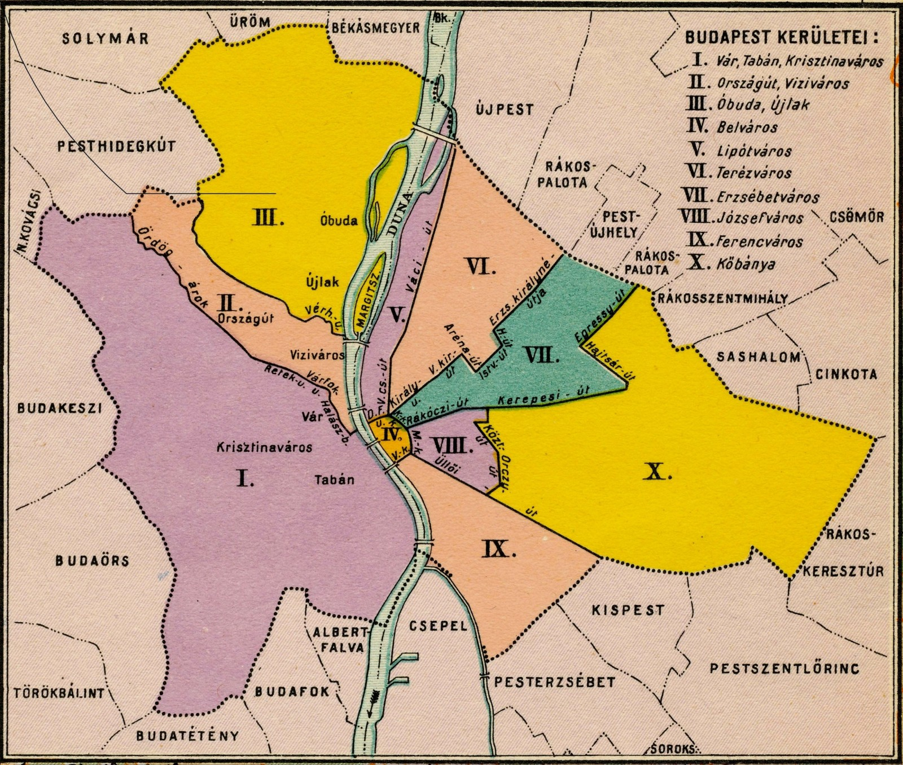
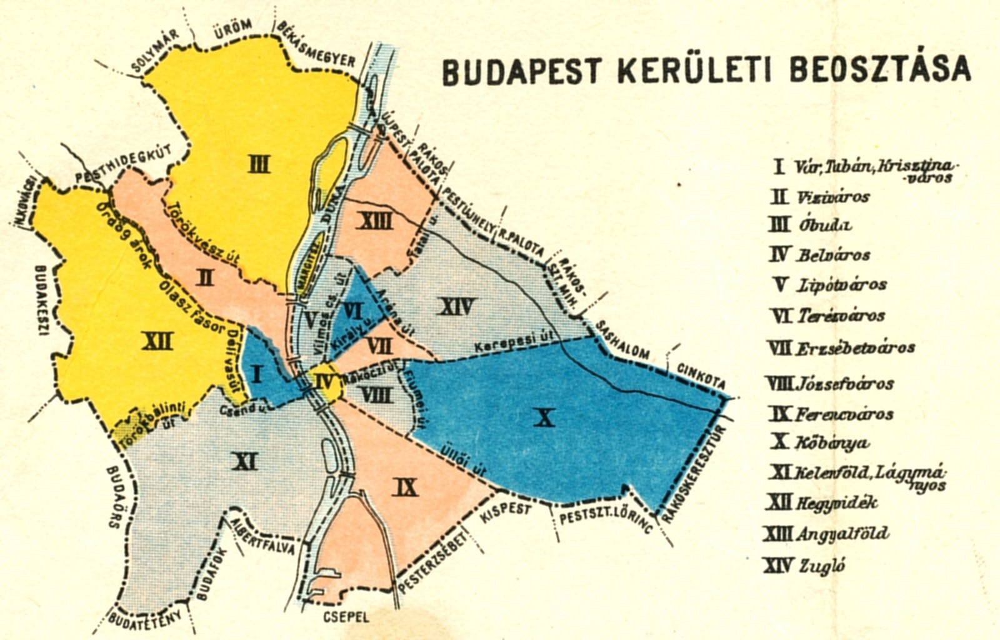
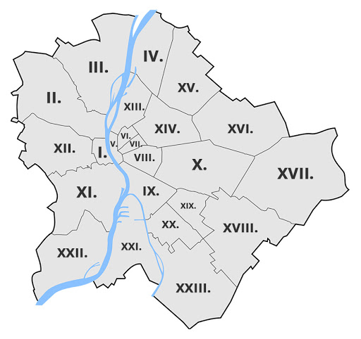

Tizenkilenc megyénket sokan meg tudnánk nevezni és el tudnánk helyezni egy vaktérkép alapján. Na, de mi a helyzet a huszonhárom budapesti kerülettel? Személyes tapasztalatom azt mutatja, hogy nem csak a Budapesten tanuló vagy dolgozó, egyébként vidéki embereknek, de maguknak a tősgyökeres fővárosiaknak is sokszor gondot okoz belőni, hogy pontosan merre is található egy-egy kerület. Szóval, hogy is néz ez ki? És miért alakult így? 1873. január 1-jén Buda, Pest és Óbuda egyesítésével alapították meg Budapest városát. A várost ekkor tíz kerületre osztották, melyek önálló közigazgatási egységeket alkotnak, saját önkormányzattal. Mindegyik élén egy-egy polgármester, a főváros egésze élén pedig a főpolgármester áll. Hagyományosan római számokkal jelöljük a kerületeket. 1873-ban ezek a következők voltak:

| Kerület | Név |
|---|---|
| I. kerület | Vár, Tabán, Krisztinaváros |
| II. kerület | Országút, Víziváros |
| III. kerület | Újlak, Óbuda |
| IV. kerület | Belváros |
| V. kerület | Lipótváros |
| VI. kerület | Terézváros |
| VII. kerület | Erzsébetváros |
| VIII. kerület | Józsefváros |
| IX. kerület | Ferencváros |
| X. kerület | Kőbánya |
Felfedezhetünk hasonlóságot a maiakkal, ám területilegigen eltérők voltak. Ekkor még agglomerációnak számítottak olyan települések, amelyek később a város részévé váltak, mint például Újpest, Rákospalota, Csepel, Tétény, Békásmegyer vagy Pesthidegkút. Fun fact: ez utóbbi az egyetlen olyan mai, fővárosi településrész, amelynek nevében Pest szerepel, de a budai oldalon található. Fordítva egyáltalán nincs ilyen. Néhány érdekesség, hogy mik történtek Budapesten ez idő tájt: 1874-ben átadták a fogaskerekű vasutat. 1878-ban villany-közvilágítást létesítettek a város központjában. 1896-ban London után másodikként a világon átadták a földalatti vasutat (M1). Viszont míg a londoni gőzvontatású volt, a budapesti metró villamos meghajtással került üzembe. 1924-ben megalakult a Magyar Nemzeti Bank. A következő területi változások 1930-ban következtek be. A (székes)fővároshoz csatolták az addig Budakeszihez tartozó erdőterületet, valamint Csepeltől az állami kikötő területét. Ezen felül a városegyesítéskor létrehozott tíz kerületből tizennégyet alakítottak ki. A korábbi I. kerület három részre osztásával hozták létre az új I., valamint a XI-XII. kerületeket. A hosszasan elnyúló V. VI. és VII. kerületek külterületeiből pedig a XIII-XIV-et alakították ki. Így az addig is kis kiterjedésű Belvárost már további kis területű kerületek vették körbe, melyek lakosságszáma viszont a központi elhelyezkedés miatt igen magas volt, népességüket tekintve egyáltalán nem számítottak kicsinek. Az alábbi felosztás lépett érvénybe:

| Kerület | Név |
|---|---|
| I. kerület | Vár, Tabán, Krisztinaváros |
| II. kerület | Országút, Víziváros |
| III. kerület | Újlak, Óbuda |
| IV. kerület | Belváros |
| V. kerület | Lipótváros |
| VI. kerület | Terézváros |
| VII. kerület | Erzsébetváros |
| VIII. kerület | Józsefváros |
| IX. kerület | Ferencváros |
| X. kerület | Kőbánya |
| XI. kerület | Kelenföld, Lágymányos |
| XII. kerület | Hegyvidék |
| XIII. kerület | Angyalföld |
| XIV. kerület | Zugló |
A város ma ismert határai 1950. január 1-jén léptek hatályba. Ekkor alakult ki az úgynevezett Nagy-Budapest. A fővároshoz csatoltak 7 várost és további 16 nagyközséget az akkori Pest-Pilis-Solt-Kiskun vármegyéből. Ám a kerületi felosztás még nem a mai volt, ekkor 22 önkormányzati egység határait iktatták törvénybe. A IV. kerületet megszüntették, azt összevonták az ötödikkel. Előbbi számát végül a legészakabbra fekvő, újonnan a városhoz csatolt településrész, Újpest kapta. Egyes településeket már meglévő kerületekbe olvasztottak be, másokból pedig új kerületeket hoztak létre, ezek a XV-XXII. számokat kapták (illetve a fentebb már említett IV-est), ha megfigyeljük, nagyjából körben haladva, egymás mellett. Később két további változás történt. 1994-ben, az addigi XX. kerületből kivált a legújabb, XXIII. kerület, Soroksár. 2013. július 20-a óta pedig az egészen addig a XIII. kerület részét képező Margitsziget városrészt kivonták annak fennhatósága alól, és a főváros közvetlen igazgatása alá helyezték. Nem tartozik egyetlen kerülethez sem. Itt jegyezném meg, hogy a kerületek további városrészekre oszlanak, de ezek nem önkormányzati egységek. Egy 2012-es rendelet nyomán Budapestnek ma hivatalosan 203 városrésze van. Legtöbbet ezek közül, egészen pontosan 33-at a XII. kerület tudhat magáénak, míg például a VI. kerületet csupán egyetlen városrész alkotja, Terézváros. A jelenlegi huszonhárom kerület közül húsznak saját hivatalos neve van, ezek legtöbbször a kerületekben található jelentősebb városrészek nevei. A mai huszonhárom kerület, neveikkel:
További érdekességek
Bármily meglepő is, a két legnagyobb népességgel rendelkező kerület a budai oldalon található. Újbudán élnek a legtöbben, egyetemünk kerületének 148 517 lakosa van, míg Óbuda-Békásmegyer 130 560 rezidenssel büszkélkedhet. Legkevesebben Soroksáron élnek, a kerületnek mindössze 22 965 lakója van (2009). Terület szempontjából Rákosmente az aranyérmes a maga 54,82 km2-ével. Utolsó helyen Erzsébetváros áll, a VII. kerület egy mindössze 2,09 km2-es földdarabon fekszik. Épp, hogy nagyobb, mint a világ második legkisebb állama, az 1,93 km2 területű Monaco. Népsűrűséget tekintve fordul a kocka, Erzsébetváros a legsűrűbben lakott kerület, 25 053,59 fő/km2-es értékével. Utolsó helyen itt is Soroksár áll, kevés lakója mellett egészen nagy a területe, népsűrűsége 563,28 fő/ km2(2009). A budapesti irányítószámok a következőképp néznek ki: 1XYZ. Az első számjegy mindig 1-es, XY az adott kerület sorszáma, Z pedig az adott postahivatal száma (pl.: A Kármán irányítószáma: 1111). Margitsziget területe 0,965 km2 és 6 hivatalos lakója volt 2011-ben. Mára már teljesen lakatlan. Ugye egyetlen kerülethez sem tartozik, irányítószáma 1007. „Margitsziget”-ként kell írni, ha a városrészt értjük alatta, azonban amikor a Duna szigetét emlegetjük, akkor Margit-sziget a helyesírása. Budapest lakossága 1980 körül volt a legnagyobb, ekkor mintegy 2 059 226 ember élt a fővárosban. Már ez a szám alacsonyabb, de egy mélyrepülést követve újfent növekszik. A 2019-es adatok szerint 1 752 286 fő a város népessége.

| Kerület | Név |
|---|---|
| I. kerület | Budavár |
| II. kerület | - |
| III. kerület | Óbuda-Békásmegyer |
| IV. kerület | Újpest |
| V. kerület | Belváros-Lipótváros |
| VI. kerület | Terézváros |
| VII. kerület | Erzsébetváros |
| VIII. kerület | Józsefváros |
| IX. kerület | Ferencváros |
| X. kerület | Kőbánya |
| XI. kerület | Újbuda |
| XII. kerület | Hegyvidék |
| XIII. kerület | - |
| XIV. kerület | Zugló |
| XV. kerület | Rákospalota-Pestújhely-Újpalota |
| XVI. kerület | - |
| XVII. kerület | Rákosmente |
| XVIII. kerület | Pestszentlőrinc-Pestszentimre |
| XIX. kerület | Kispest |
| XX. kerület | Pesterzsébet |
| XXI. kerület | Csepel |
| XXII. kerület | Budafok-Tétény |
| XXIII. kerület | Soroksár |
A cikk forrása: kate.hu